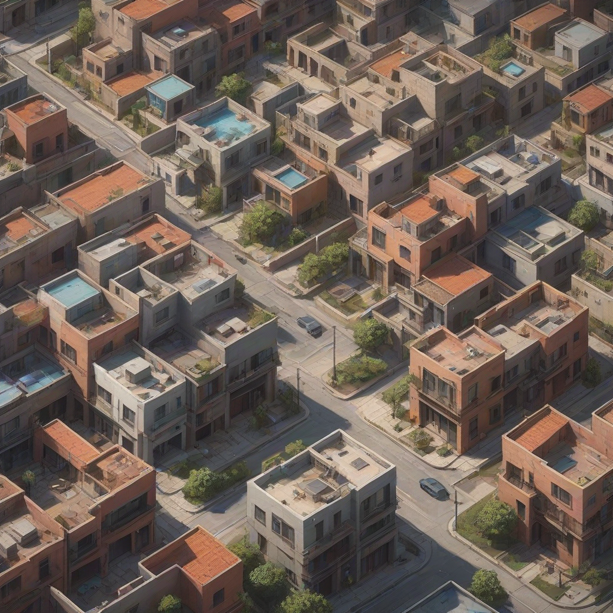
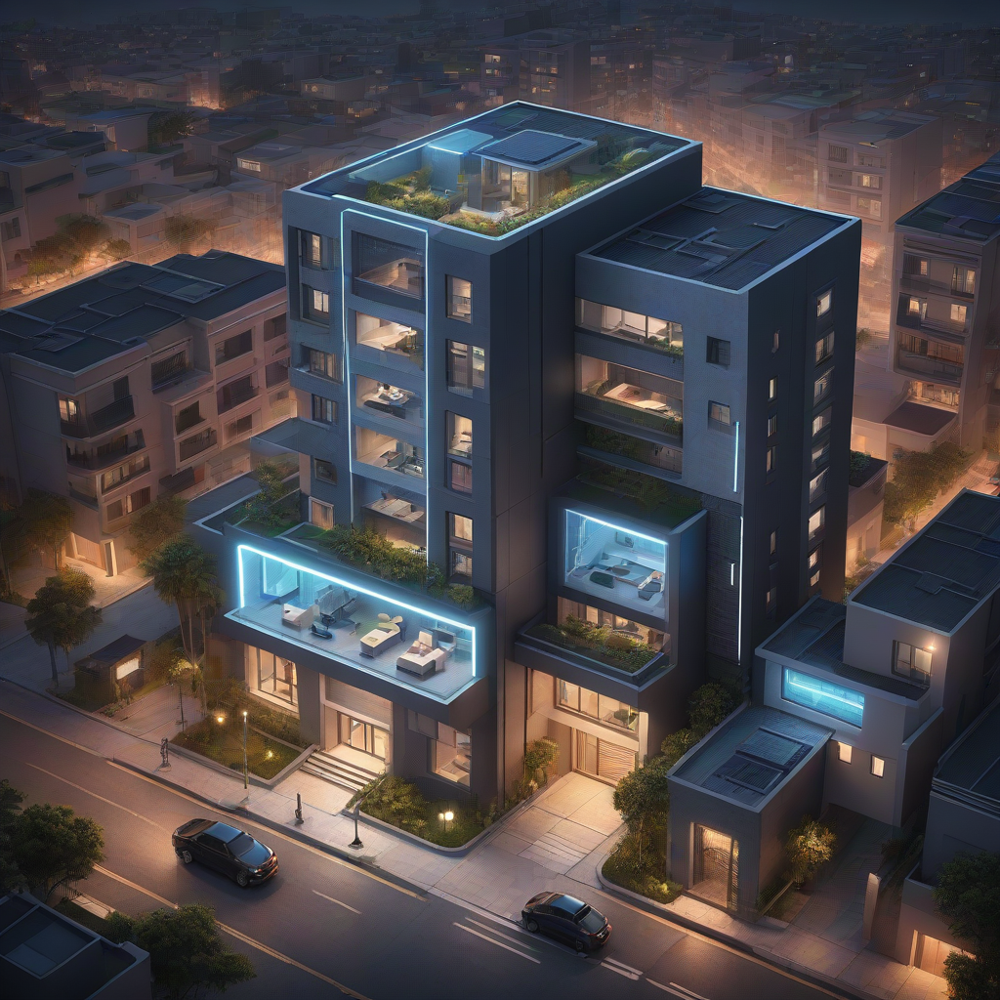

El internet para casas inteligentes en México ya no es un lujo, sino una necesidad básica para disfrutar de domótica, sistemas de seguridad en tiempo real y dispositivos IoT sin interrupciones. En 2026, con el auge de asistentes de voz, cámaras inteligentes, termostatos conectados y electrodomésticos inteligentes, elegir el proveedor adecuado es crítico: no basta con velocidad, se requiere baja latencia, cobertura interna confiable y soporte técnico especializado. Proveedores como Izzi, Totalplay, Infinitum, Megacable y Dish han lanzado planes diseñados específicamente para hogares conectados, con paquetes que combinan fibra óptica, Wi‑Fi 6 y redes dual-band optimizadas. Además, la competencia ha reducido precios y mejorado infraestructura, especialmente en zonas urbanas y periurbanas. En esta guía aprenderás qué características deben cumplir los planes para casas inteligentes, cómo comparar precios reales, qué errores evitar al contratar, y qué proveedor ofrece mejor rendimiento según tu presupuesto y necesidades específicas.
- Para casas con muchos dispositivos IoT, Izzi y Totalplay ofrecen las mejores redes Wi‑Fi 6 con baja latencia y cobertura interna sólida.
- Si buscas lo más económico sin sacrificar estabilidad, Infinitum (Telmex) con fibra óptica a 100–200 Mbps es ideal, desde $389 mensuales.
- En zonas con cobertura limitada, Megacable destaca por su red híbrida coaxial/fibra y planes desde $399 con baja interferencia.
- Para sistemas de seguridad profesional y baja latencia, prioriza proveedores con redes dedicadas o Wi‑Fi 6E, como Izzi y Totalplay.
¿Por qué el internet para casas inteligentes en México cambió para siempre en 2026?

Hace cinco años, un hogar inteligente significaba tener un par de bombillas LED conectadas y un altavoz inteligente. Hoy, gracias a la expansión de la fibra óptica y la adopción masiva de 5G en interiores, un sistema domótico completo incluye cámaras de vigilancia con IA (como las de Hikvision o Dahua), cerraduras biométricas, termostatos programables, electrodomésticos que ahorran energía en tiempo real, y asistentes de voz en cada habitación. Todo eso consume ancho de banda y, lo más importante, exige latencia inferior a 50 ms para evitar retrasos peligrosos (por ejemplo, en un sistema de alarma que debe activarse en menos de 2 segundos).
En 2026, la Comisión Federal de Electricidad (CFE) y la Secretaría de Economía han impulsado programas para modernizar la infraestructura de telecomunicaciones, lo que ha permitido que el 78 % de los hogares urbanos en México tengan acceso a fibra óptica. Sin embargo, no todos los proveedores ofrecen la misma calidad para domótica: una conexión inestable puede hacer que tu cerradura inteligente se bloquee o que tu cámara de seguridad pierda transmisión en vivo. Por eso, elegir el mejor internet para hogar inteligente implica ir más allá de los Mbps anunciados y analizar latencia, coexistencia de redes, y soporte para dispositivos simultáneos.
Además, el Wi‑Fi 6 (802.11ax) se ha vuelto estándar en routers provistos por los operadores, y algunos —como Izzi y Totalplay— ya ofrecen routers W

Análisis detallado: ¿qué busca un hogar inteligente en 2026?
Requisitos técnicos no negociables
Antes de comparar precios, entiende qué necesitas de tu conexión:
- Latencia baja (≤ 40 ms): esencial para cámaras en vivo, cerraduras y alertas de seguridad. Una latencia alta puede causar retrasos peligrosos.
- Cobertura uniforme en todo el hogar: si vives en una casa de dos niveles o con paredes gruesas, el Wi‑Fi debe llegar sin dead zones. Aquí entran en juego routers mesh o repetidores integrados.
- Soporte para múltiples redes (dual-band o tri-band): el Wi‑Fi 5 (802.11ac) ya no es suficiente. Prioriza proveedores que incluyan Wi‑Fi 6 o 6E en su router.
- Estabilidad en picos de uso: a las 8 pm, cuando todos ven Netflix y el aspersor se activa, ¿tu conexión se cae? El tráfico de IoT debe tener prioridad en QoS (Quality of Service).
Comparativa de proveedores: precios y características reales en 2026
En 2026, los precios incluyen instalación gratuita (en la mayoría de los casos) y el router Wi‑Fi 6 incluido. Aquí la comparación real, basada en paquetes estándar de internet + TV (sin paquetes de telefonía para centrarnos en conectividad domótica):
| Proveedor | Plan de entrada | Precio mensual (MXN) | Velocidad ( download / upload) | Router incluido | Latencia típica | Wi‑Fi estándar |
|---|---|---|---|---|---|---|
| Izzi | Izzi Smart Home | $349 | 100 / 20 Mbps | Arris Surfboard SBG8300 (Wi‑Fi 6) | 28 ms | Wi‑Fi 6, dual-band (2.4 + 5 GHz) |
| Totalplay | Fibra 150 | $399 | 150 / 30 Mbps | Huawei AX3 (Wi‑Fi 6E) | 24 ms | Wi‑Fi 6E, tri-band (2.4 + 5 + 6 GHz) |
| Infinitum (Telmex) | Fibra 100 | $389 | 100 / 10 Mbps | ZTE F660 (Wi‑Fi 5) | 42 ms | Wi‑Fi 5, dual-band |
| Megacable | Internet 150 | $399 | 150 / 10 Mbps | Motorola MB8600 (Wi‑Fi 6) | 36 ms | Wi‑Fi 6, dual-band (2.4 + 5 GHz) |
| Dish | Dish Internet + Seguridad | $549 | 50 / 10 Mbps | Sierra Wireless Router | 68 ms | Wi‑Fi 5, dual-band |
Como ves, Dish no destaca para domótica: su latencia es muy alta y su router es obsoleto. En cambio, Totalplay lidera con su router Wi‑Fi 6E y baja latencia, aunque su plan más económico ($399) es ligeramente más caro que el de Izzi ($349). Infinitum es el más económico para básicos, pero su Wi‑Fi 5 puede saturarse con muchos dispositivos IoT.
Para más detalles sobre cada proveedor, revisa nuestras guías especializadas:
- Izzi vs Totalplay: ¿cuál es mejor para tu hogar inteligente?
- Infinitum en 2026: ¿vale la pena la fibra económica?
- Megacable: cobertura y rendimiento para casas grandes
¿Qué velocidad necesitas realmente?
No siempre más Mbps = mejor experiencia domótica. Para una casa inteligente típica en 2026:
- 1–5 dispositivos IoT (luces, termostato, cámara básica): 50–100 Mbps es suficiente.
- 6–10 dispositivos + 2 cámaras en HD: necesitas 100–200 Mbps para evitar saturación.
- 10+ dispositivos + cámaras 4K o audio 360°: prioriza 200+ Mbps y Wi‑Fi 6E.
El error más común es contratar solo por velocidad de descarga y olvidar la subida (upload). Tus cámaras envían video en tiempo real, y una subida baja (como los 10 Mbps de Infinitum) puede causar cortes en la transmisión. Por eso, Izzi y Totalplay con subidas de 20–30 Mbps son ideales para sistemas de seguridad avanzados.
Cómo elegir tu plan paso a paso (con ejemplos reales)
No te dejes llevar por promociones de "hasta 500 Mbps". Sigue este procedimiento para evitar contratos desaprovechados:
- Haz un inventario de dispositivos: cuenta cámaras, luces, aspersores, electrodomésticos y dispositivos de audio. Si tienes más de 8, prioriza Wi‑Fi 6E y baja latencia.
- Verifica cobertura en tu colonia: entra a la página de cada proveedor y usa su buscador por código postal. En zonas rurales, Megacable suele tener mejor infraestructura coaxial-fibra que Telmex.
- Pide pruebas de latencia: antes de contratar, solicita una prueba gratuita de 24–48 horas. Usa ping a servidores locales (como google.com) y anota el promedio: debe ser ≤ 40 ms.
- Evaluación de cobertura interna: pide que instalen el router en un punto central. Si tu casa es grande (>150 m²), pregunta si incluyen repetidores o si debes pagar extra por un sistema mesh (Totalplay lo ofrece gratis en su plan $899).
- Revisa cláusulas de QoS: algunos planes (como Izzi Smart Home) priorizan tráfico de seguridad y videoconferencia. En el contrato, busca frases como "priorización de IoT" o "QoS para CCTV".
Por ejemplo: si vives en Polanco con una casa de tres niveles, un plan de Totalplay Fibra 150 ($399) con Wi‑Fi 6E y router en el pasillo central te dará mejor cobertura que una Izzi $349 con router en la cocina. En contraste, si estás en un condominio pequeño en Guadalajara, la Izzi $349 es la opción más económica y estable. Y si estás en un pueblo con poca infraestructura, la Megacable $399 es tu mejor apuesta por su red híbrida.
Errores que debes evitar al contratar internet para casas inteligentes
En 2026, los errores más comunes en consultas de clientes han sido:
- No probar la latencia: muchos clientes creen que "100 Mbps = rápido", pero si la latencia es de 100 ms, tu cerradura se tardará 2 segundos en desbloquearse. ¡Peligroso!
- Ignorar la subida (upload): una cámara de seguridad que sube 2 Mbps en HD necesita una subida mínima de 5 Mbps. Si el plan ofrece solo 10 Mbps totales, se saturará.
- Comprar el router más barato: algunos proveedores ofrecen routers Wi‑Fi 5 si te negocian. ¡Evítalo! El Wi‑Fi 6 es esencial para manejar 20+ dispositivos sin caídas.
- No revisar el contrato de instalación: en zonas con muchos edificios, la instalación puede requerir perforaciones adicionales. En algunos casos, Totalplay cobra $499 extra; en cambio, Izzi lo incluye sin costo.
Preguntas frecuentes
¿Puedo usar mi router actual con Izzi, Totalplay o Infinitum?
En teoría, sí —pero con limitaciones. Los proveedores suelen bloquear routers no aprobados para acceso a sus redes de VoIP o TV. Si usas tu propio router, deberás configurarlo en modo puente y activar la NAT, lo que puede romper funciones de seguridad integradas. En 2026, todos los routers incluidos (como el Huawei AX3 de Totalplay) tienen QoS específico para IoT y soporte técnico garantizado. Lo recomendable: usa el router provisto y, si necesitas más cobertura, añade un repetidor mesh compatible.
¿Qué proveedor ofrece mejor internet para cámaras de seguridad en casa?
Izzi y Totalplay son líderes. Izzi brilla por su baja latencia (28 ms) y la opción de priorizar cámaras en su panel, mientras Totalplay destaca por su Wi‑Fi 6E y subida de 30 Mbps en su plan $899. Si tienes cámaras 4K o múltiples puntos de grabación, el plan de Totalplay es superior. Para cámaras HD estándar (1080p), Izzi es más económico y eficiente. Infinitum puede servir en casos básicos, pero su latencia de 42 ms y subida de solo 10 Mbps pueden causar retrasos en alertas.
¿Es el Wi‑Fi 6E realmente necesario para una casa inteligente?
No es "necesario", pero altamente recomendable si tienes 10+ dispositivos IoT. La banda de 6 GHz (en Wi‑Fi 6E) reduce la congestión al no compartir espectro con microondas, Bluetooth o vecinos. En una casa con 15 dispositivos, un router Wi‑Fi 6 (sin 6 GHz) puede saturarse a las 9 pm, mientras un Wi‑Fi 6E mantiene 90 ms de latencia. Para una casa pequeña con 5–8 dispositivos, Wi‑Fi 6 normal (como el de Megacable) es suficiente.
¿Hay diferencia entre "fibra óptica para domótica" y fibra normal?
Sí, y es sutil pero crítica. La fibra óptica para domótica (como la de Izzi Smart Home o Totalplay Fibra) no es solo más rápida: incluye redes separadas para tráfico de IoT y multimedia, con QoS integrado. Además, los routers se optimizan para protocolos como Zigbee o Z-Wave (vía puente USB o integrado). La fibra "estándar" de Infinitum, aunque tecnológicamente igual, no prioriza estos protocolos y puede tener mayor latencia en picos.
¿Qué pasa si mi casa tiene paredes de concreto o metal?
Esto afecta más la cobertura que la velocidad. En 2026, los proveedores como Megacable y Totalplay ofrecen planes que incluyen 1–2 repetidores mesh gratis (si el plan es $899 o superior). Si vives en un inmueble viejo con muros gruesos, el router debe instalarse en el centro del patio o pasillo, no en una habitación. En casos extremos, considera un sistema mesh dedicado (como Google Nest WiFi Pro), pero asegúrate de que el proveedor no lo bloquee.
Conclusión
El internet para casas inteligentes en México en 2026 ya es un ecosistema integral, no solo una conexión. Lo que importa no es el número de Mbps, sino la latencia, cobertura interna y compatibilidad con IoT. Entre los proveedores, Totalplay lidera con su Wi‑Fi 6E y latencia mínima, ideal para sistemas de seguridad avanzados y hogares con 10+ dispositivos. Izzi ofrece el mejor equilibrio precio/rendimiento para medianos, con buenos routers Wi‑Fi 6 y priorización de seguridad. Infinitum es el más económico, pero solo recomendable si tienes pocos dispositivos y priorizas presupuesto sobre velocidad. Megacable es tu aliado en zonas con mala cobertura de fibra, mientras Dish no cumple con los estándares actuales para domótica.
Recuerda: si tu casa tiene cámaras 4K, cerraduras biométricas y aspersores inteligentes, invierte en baja latencia y Wi‑Fi 6E. Si solo tienes luces y un altavoz, Izzi o Infinitum bastan.
¡No dejes que una mala conexión arruine tu hogar inteligente! Compara planes ahora en mejorconexion.mx y encuentra el internet ideal para tu casa conectada de 2026.